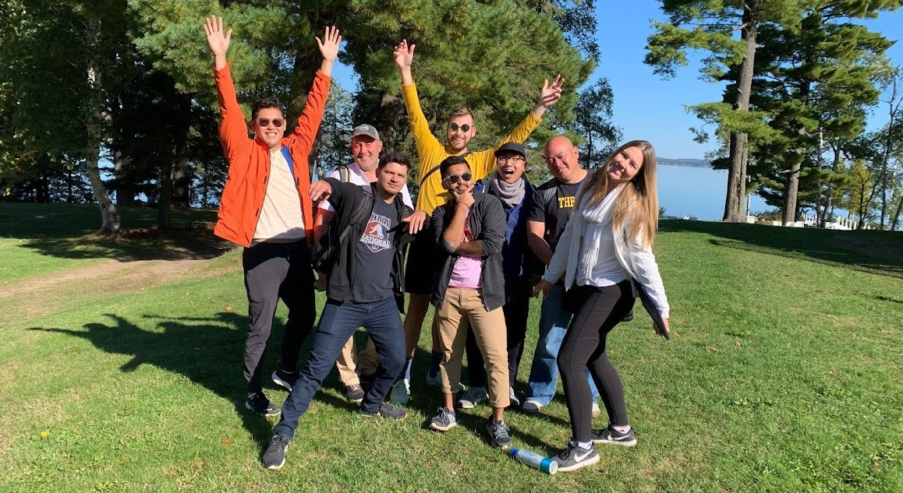

my experiences
From fast growing startups to Fortune 500s, I've been very lucky to have had a variety of experiences. Here are a few highlights.
💻 Microsoft
Product Manager (2020 - present)
Seattle, WA
- Launched Microsoft’s 3D shopping experience on microsoft.com that resulted in over 4000 daily active users and 30% increase in conversion, with projected revenue increase of $6.8 million in FY21/22
- Led an engineering team to implement improvements to Microsoft’s customer-facing appointment booking portal that led to an 86% increase in appointment bookings
- Spearheaded user research with microsoft.com customers and identified UX and process improvements that are currently being implemented and are projected to increase revenue by $1 million
- Leveraged machine learning to analyze feedback from customer surveys resulting in savings of over 43 hours/week of manual analyses for Microsoft’s worldwide retail operations team

🏡 Setter
Senior Operations Associate (2019 - 2020)
San Francisco, CA
- Led service operations for Setter, a Sequoia backed venture, in San Francisco and successfully delivered client projects that brought in a total GMV of $1.8 million
- Launched a team in the Philippines to support service operations in San Francisco resulting in cost to serve to dollars sold ratio improving by 172%
- Implemented a collections process that resulted in collection of $250,000 worth of outstanding invoices
- Collaborated cross-functionally with product and engineering teams to successfully deliver automated Pro correspondence resulting in efficiencies upwards of 40 hours/month.

💼 The Poirier Group
Consultant (2018)
Toronto, ON
- Collaborated with healthcare client to develop and implement a data reconciliation tool, using VBA, that saved them 18 hours/week
- Increased profits for a steel fabricator by 20%, by implementing Lean Six Sigma practices to improve tool management, procurement and warehousing
- Implemented a new expense management tool internally, after extensive market research and user feedback accumulation, that resulted in savings of 200 hours/year for the company
- Worked directly with CEO David Poirier to identify potential clients and industries to define company strategy

🚚 Procter & Gamble
Supply Chain Project Manager (2017 - 2018)
Toronto, ON
- Led a multidisciplinary team of 30 people responsible for testing major updates to P&G’s North American supply chain network, which is critical to P&G’s $30 billion North American business
- Collaborated with business and technical teams to automate testing of the order management tool which would reduce testing time from 3 months to 2 weeks per year
- Kickstarted a project to decommission a legacy application and enhance functionality of another existing tool, resulting in savings of $150K/year
- Successfully implemented a self-initiated gamification project to improve tester engagement and gather data on tester performance; work recognized by Director in Germany